Superficies en piedra
natural y sinterizada
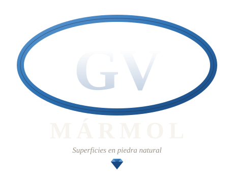
Quito · 2026 Toca para abrirFabricamos e instalamos mesones, revestimientos, pisos y escaleras en piedra natural y sinterizada. Medición en obra, corte, pulido e instalación con un solo responsable.
Ver catálogoGV MÁRMOL nació del oficio de Gustavo Vega, marmolista con más de dos décadas trabajando la piedra en Quito. De grano lavado y marmetón pasamos a cortar losas de mármol, granito y piedra sinterizada con puente CNC, pulir cantos a mano e instalar con precisión.
Trabajamos directo con arquitectos, constructoras y familias. Cada proyecto lleva medición en obra, plantillado y una sola visita de instalación limpia.
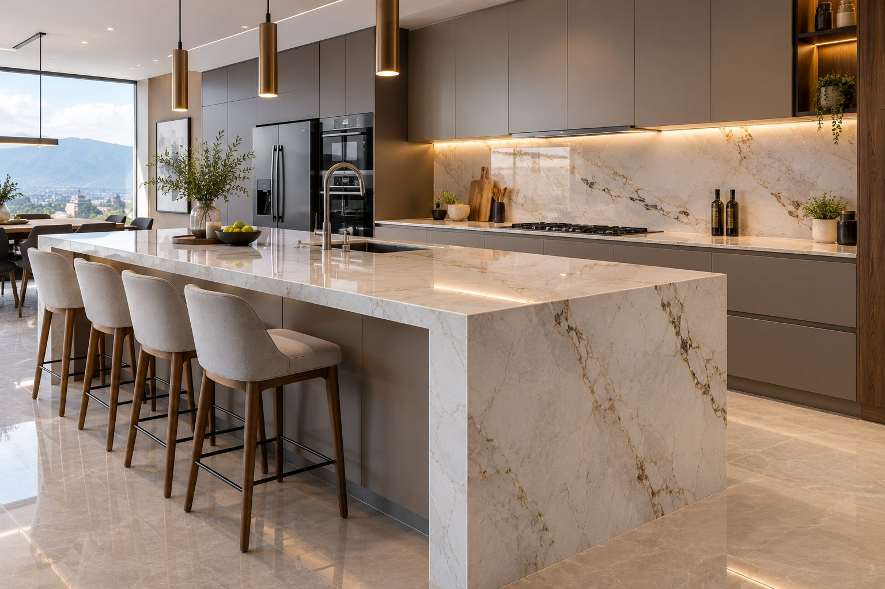
Fundador y director · GV MÁRMOL
“Llevo más de veinte años cortando piedra en Quito. Cada mesón que sale del taller lo reviso yo. Esa es la garantía.”
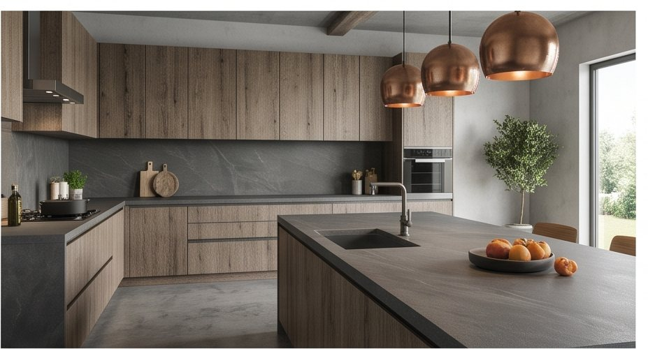
La piedra bien cortada e instalada dura toda la vida.
Una selección de nuestras piedras más pedidas. Toca cualquiera para pedir precio y disponibilidad por WhatsApp.
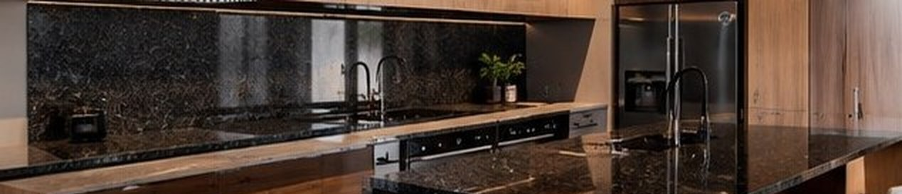
Pedir precio →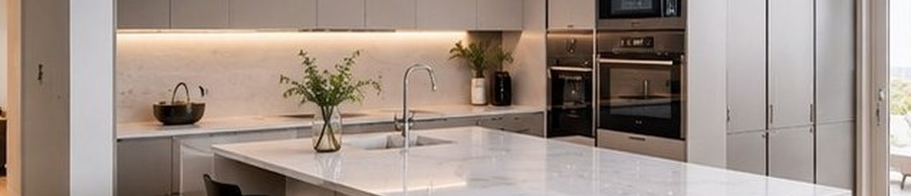
Pedir precio →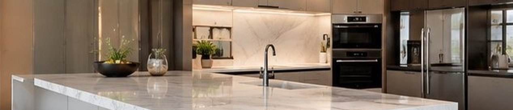
Pedir precio →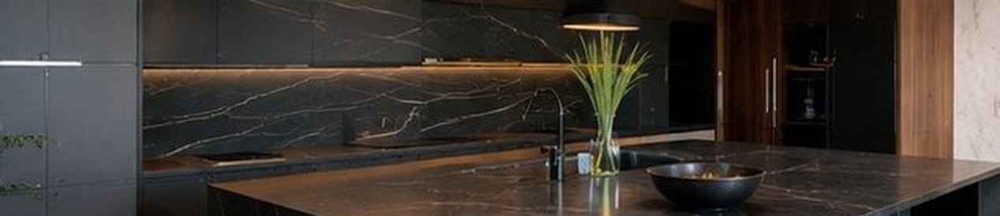
Pedir precio →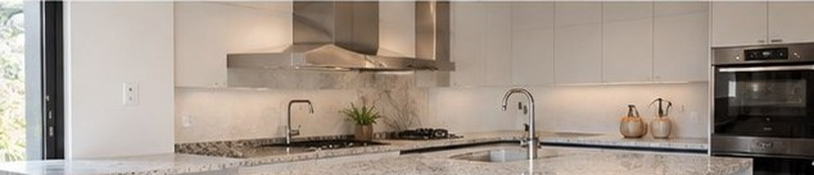
Pedir precio →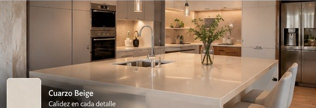
Pedir precio →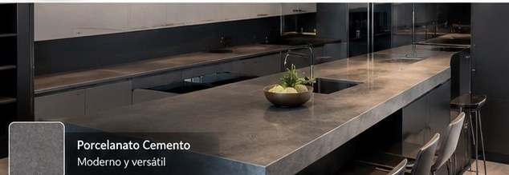
Pedir precio →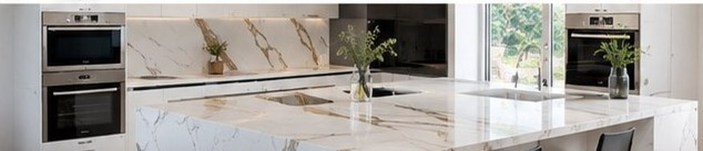
Pedir precio →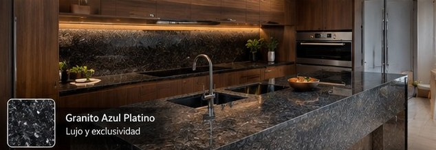
Pedir precio →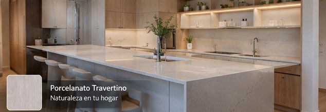
Pedir precio →Residencias, cocinas de arquitectos y espacios comerciales en Quito y los valles.
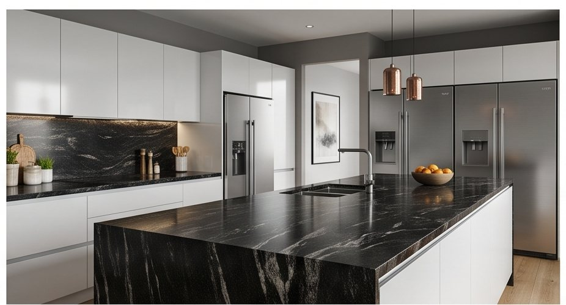
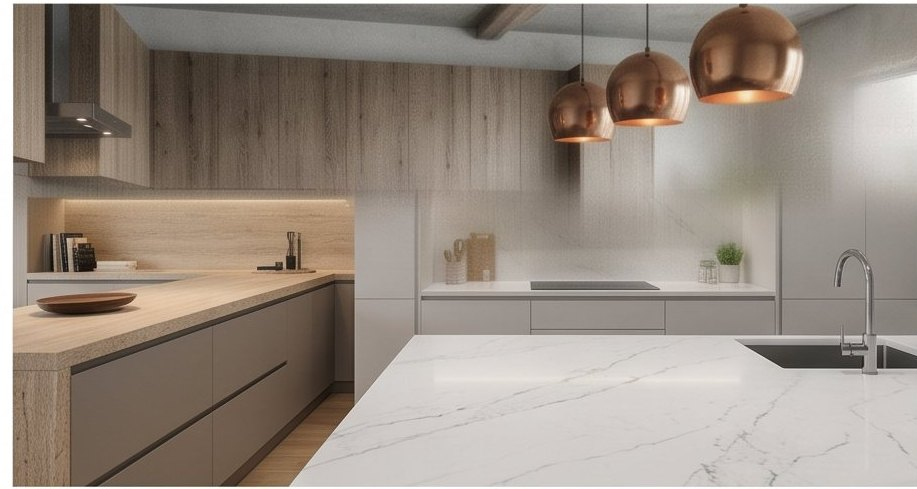
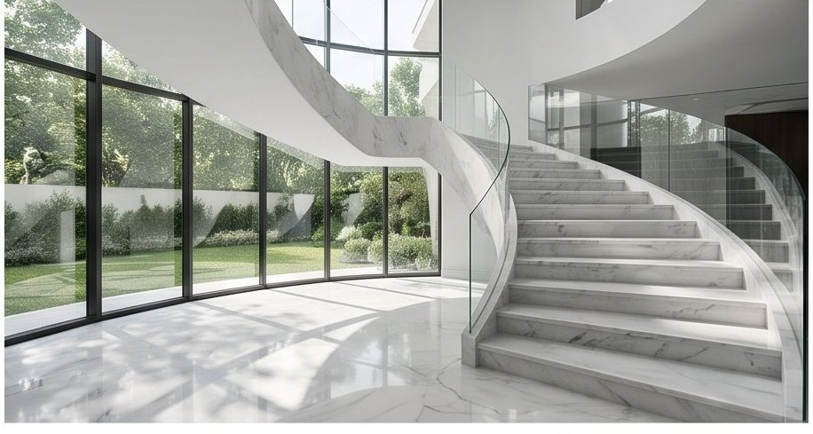
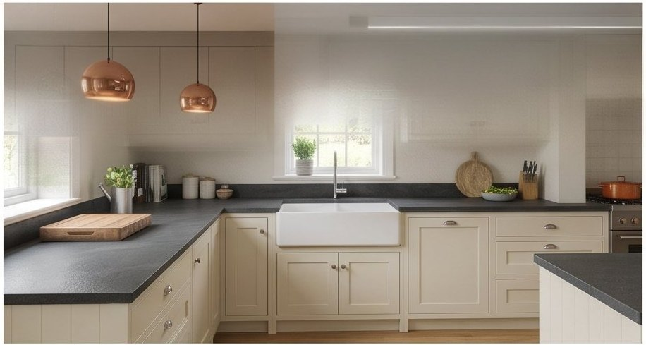
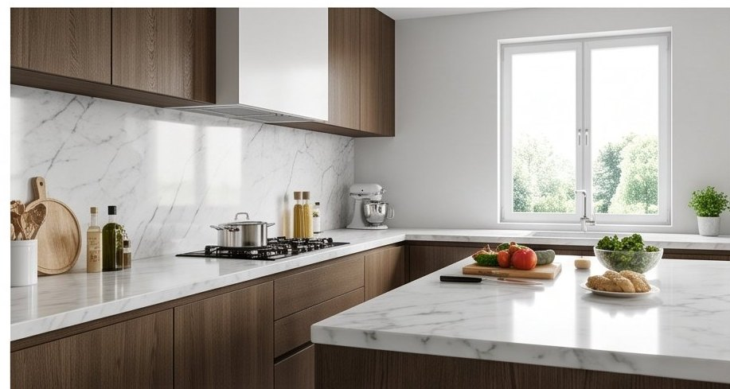
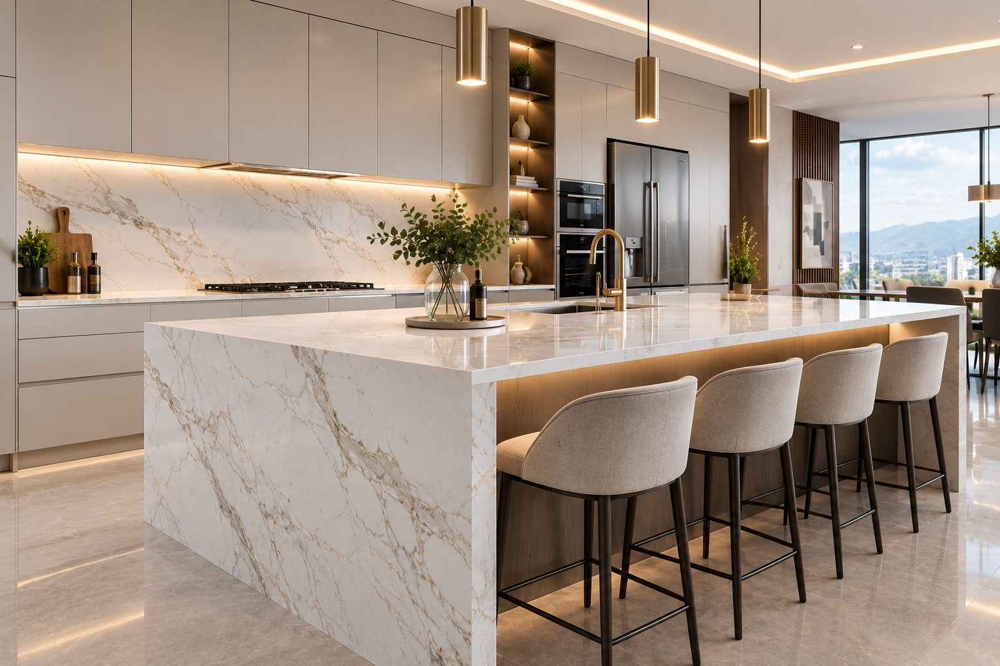
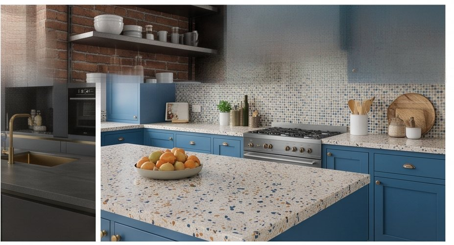
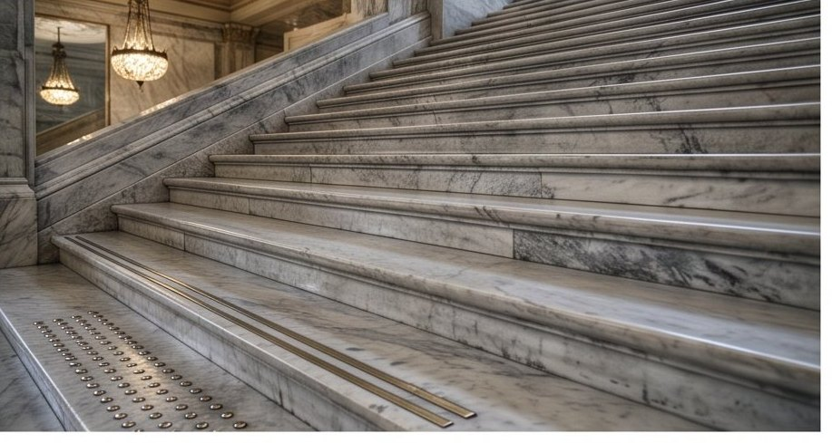
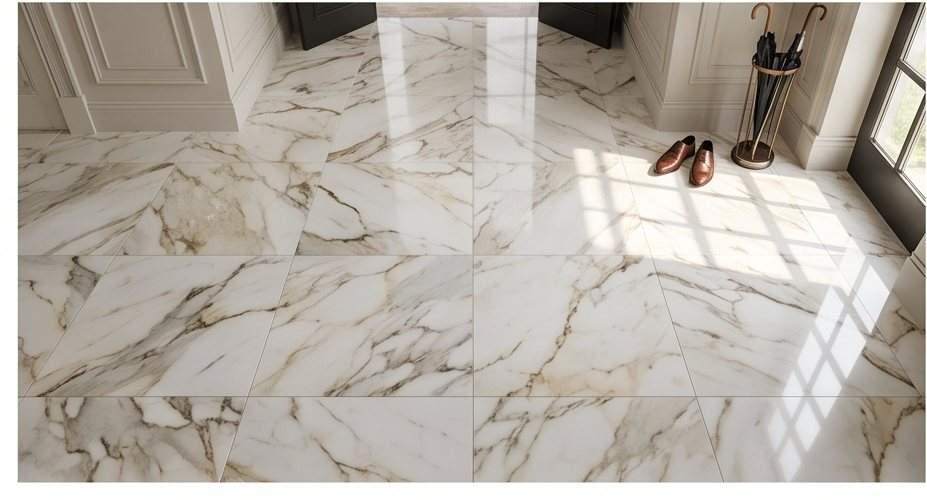
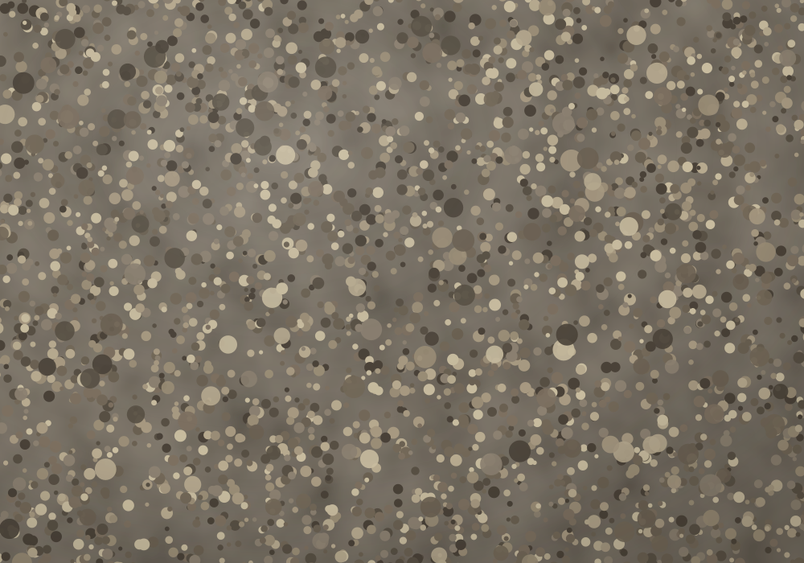
Grano lavado y grano pulido hechos en obra: mortero con áridos de canto rodado a la vista, sin juntas, muy resistentes y antideslizantes. La opción de siempre para el exterior, con acabado prolijo.
Ajustamos la textura y el color del árido según el uso —más rugoso donde se necesita agarre, más fino donde manda la estética.
Visitamos la obra, tomamos medidas reales y plantilla. Te asesoramos sobre material y canto.
Precio por metro lineal con piedra, perforaciones, transporte y mano de obra incluidos.
Corte CNC de la losa, perforaciones exactas para fregadero y hornilla, pulido de cantos.
Montaje limpio en una sola visita, nivelación y sellado de la piedra.
Cuéntanos qué necesitas y te respondemos por WhatsApp el mismo día.